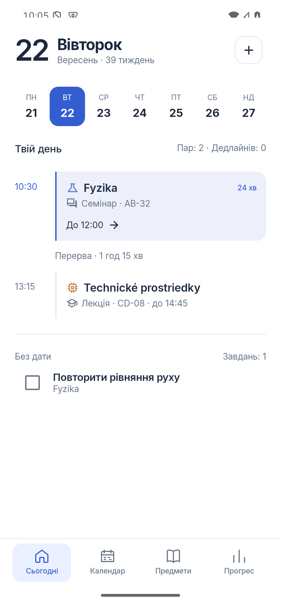
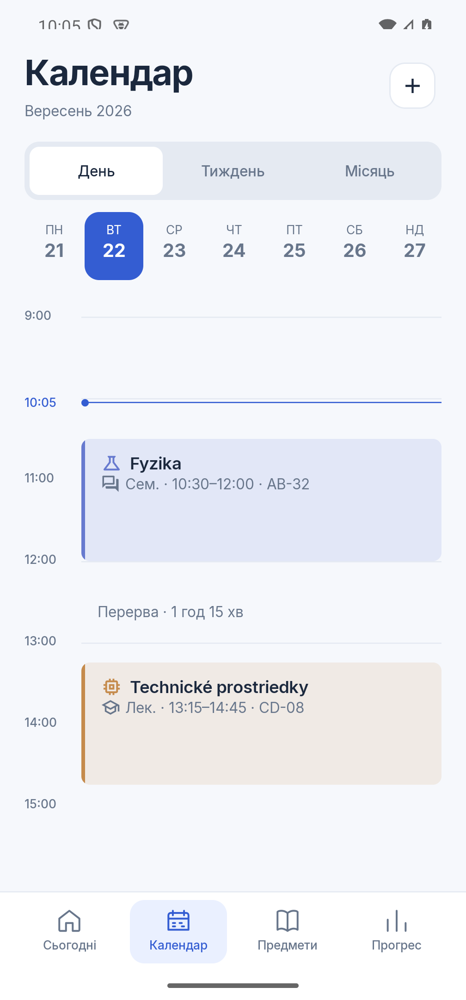
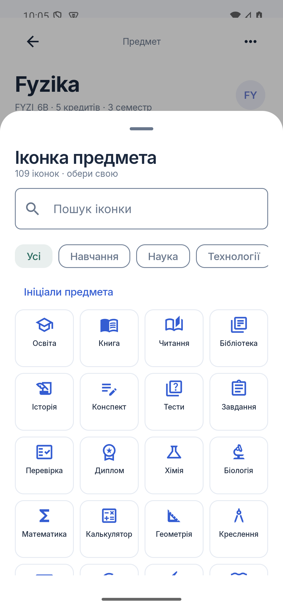
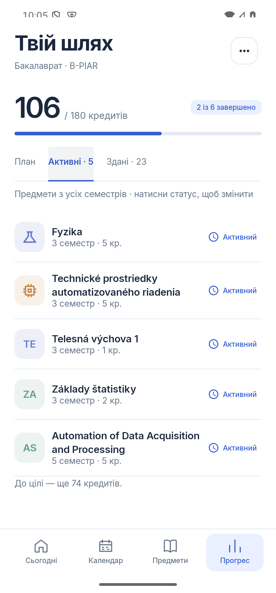
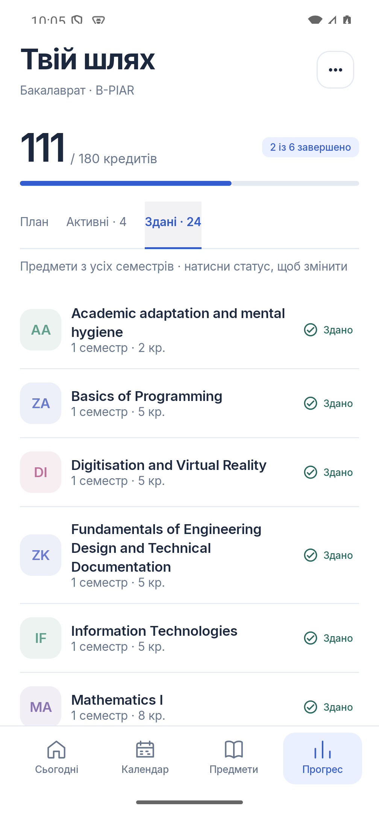
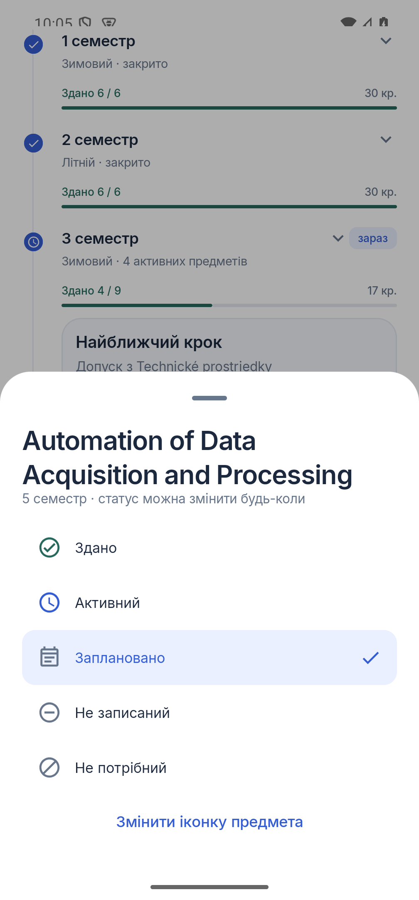
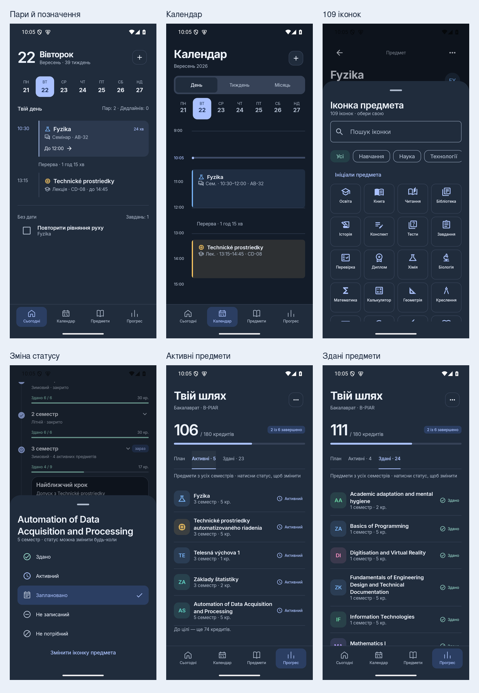
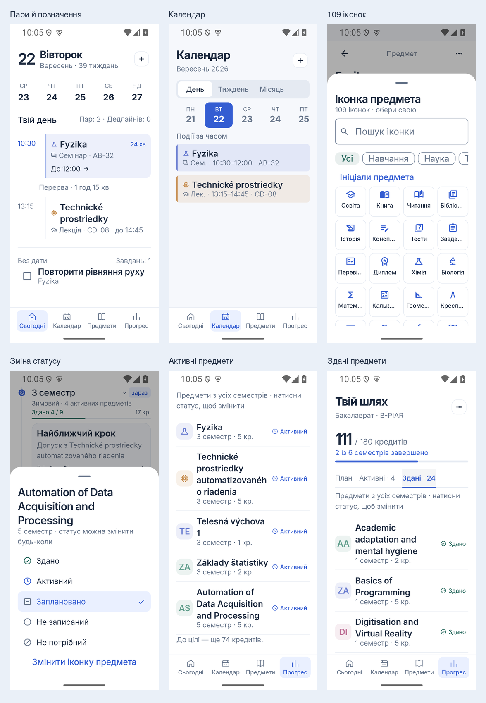

Пари, свої іконки й зрозумілий прогрес
Реальні скриншоти Android із тестовими даними. У цій збірці також працюють свайпи по вільному місцю: вправо — наступний розділ меню, вліво — попередній.
Лекція й семінар
Тип заняття має свою іконку й текст. Обрана іконка предмета стоїть біля назви.

Позначення в календарі
Типи видно в розкладі дня, тижня та списках подій.

109 іконок
Пошук українською або за англійською назвою, тематичні категорії, повернення до ініціалів.

Активні з усіх семестрів
Предмет п’ятого семестру доступний разом з активними предметами третього.

Здані предмети
Окремий список, зелені галочки й автоматичний перерахунок кредитів.

Статус у твоїх руках
Натисни статус біля предмета, щоб змінити його. Номер семестру не обмежує вибір.

Темна тема

Шрифт 150%

Тип пари: календар → пара → редагування. Іконка: предмет → значок справа від назви або меню налаштувань. Статус: прогрес → план → розгорнути семестр → натиснути статус предмета.
Для старих пар тип спочатку не вказаний: обери його в редагуванні. Іконки предметів показуються біля пар, прив’язаних до відповідного предмета.